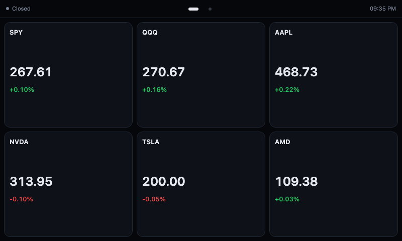
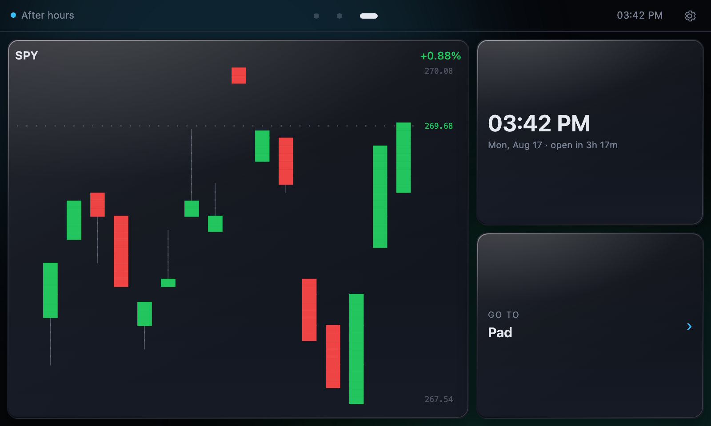
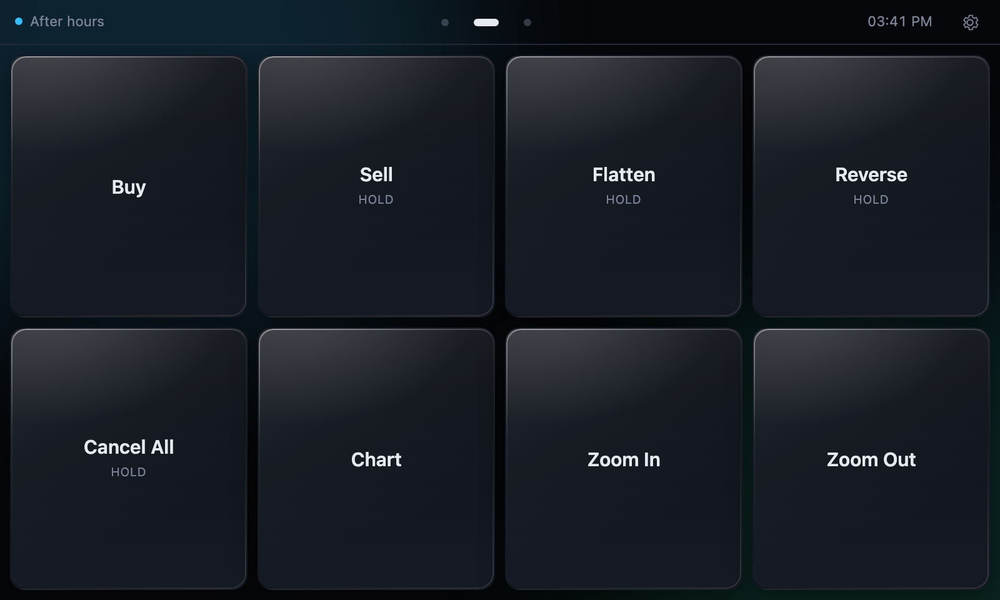
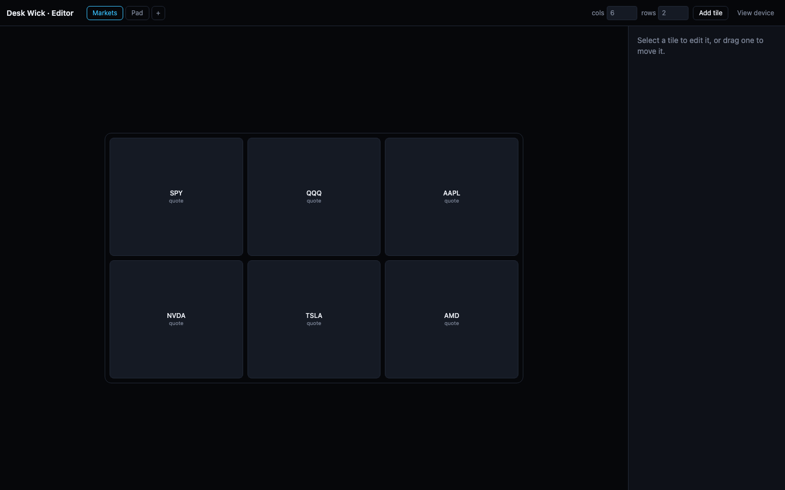

A touchscreen market terminal and macropad that sits on your desk. Flash it, plug in a screen, and it boots straight into the UI.
Image v0.3.0 · released 17 August 2026 · 1.5 GB
App v2.2.2 · released 27 August 2026 · the device updates itself to this
Everything on screen is a tile in a grid you lay out yourself — a live quote, a candlestick chart, a clock, a macro button, a gauge, a jump to another page. Swipe between pages of them. Hold any tile to move it, change its symbol, or throw it away.




Tap a ticker for candles, with the usual indicators, timeframes you can star as favourites, market open marked, and notes you pin at a price. Pinch and drag to move around it.
Above, below, crossings, percentage moves. They flash the tile, sound through the panel's speakers, and show through the screensaver — so they land while you are looking elsewhere.
Seven themes including an animated matrix and a cyberpunk palette, eight tile layouts, eight motions, tile edges from a plain rule to a phosphor rim that tears sideways every few seconds, bull/bear tinting, fonts and text sizes, and brightness.
A store on the device: clocks, notepads, CPU and memory gauges, micro-buttons. Widgets are written to a small Desk Wick format, so what you add is described rather than executed.
Settings → System → Demo runs a hands-free tour: it flicks through the themes naming each, cycles the tile edges, steps the type size, and switches indicators on over a live chart. It drives the real interface rather than playing a recording, saves nothing it touches, and exits on the first tap.
The image on this page is a starting point, not the newest build. The device fetches app updates itself — flash it once and it catches up.
Settings → System → Check for updates. It shows the installed version, the published version, and when it last looked, then downloads with a progress bar and swaps the new build in. Tick Update automatically and it checks hourly on its own.
An update installs in the background but never restarts by itself — restarting somebody who is watching a position is not a decision software should make. The new build waits for a tap, and the panel reloads into it when you give one, rather than leaving new code installed behind a page still running the old. If a build fails to start, the device rolls back on its own.
Takes about five minutes, and there's nothing to fill in. You don't
need to unzip the download — Imager reads .img.xz
directly.
Choose your Pi model and SD card. Under Operating System,
scroll to the bottom, pick Use custom, and select the
downloaded deskwick.img.xz. Write it.
Imager's OS customisation step will be greyed out — since Imager 2.0 it only customises images it downloaded itself. Nothing to do: the image sets up its own account.
First boot takes a couple of minutes while it expands the filesystem and configures itself. It reboots once, then comes up in the terminal — no desktop, no cursor, no browser chrome — running on simulated market data.
On the device: Settings → Network. It scans, shows signal strength, and asks for the passphrase on the on-screen keyboard. Nothing to edit, no second computer.
If it has never been on a network at all and you would rather set
that up before first boot, put the card back in your computer and
run configure-card.sh against the
bootfs volume that mounts. It asks for your network,
and for a password if you want to SSH in, and writes the two
cloud-init files the Pi reads on boot. By hand, that's
network-config on the same volume:
network:
version: 2
wifis:
renderer: NetworkManager
wlan0:
dhcp4: true
optional: true
regulatory-domain: "US"
access-points:
"Your Network":
password: "your-passphrase"
The account it makes is deskwick, with no password at
all — the screen logs itself in, and there's nothing to guess from a
public download. That also means no SSH until you set a password or
add a key, which is what configure-card.sh is for. It
rewrites user-data, so you can give the account a
different name there too.
Laying out tiles works either on the panel or from a browser. The API key still wants a text editor.
On the device, tap the + on any page to add a
tile or a widget, and hold one to move, retarget or delete it.
For a keyboard and a bigger canvas, open
http://<pi>:8080/editor in a normal browser —
changes appear on the panel immediately.
Put a free
Finnhub key in
/opt/deskwick/backend/.env and restart, and the
simulated data is replaced with real quotes.
ssh <user>@<pi>
sudo nano /opt/deskwick/backend/.env # FINNHUB_API_KEY=...
sudo systemctl restart deskwickA browser off the device asks for a token the first time — the panel itself is trusted because it runs there, but nothing else is. Read it off the screen under Settings → System → Remote access and paste it in. It is deliberately not fetchable over the network, so standing in front of the panel is the credential; a rotate button beside it cuts off anything still holding an old one.
Macro buttons send keystrokes to the machine you actually work on. Two ways, and you can use both at once — it's set per button.
The Pi presents itself as a real USB keyboard, so there's nothing to install on the other machine. Cable its USB-C port to your computer and power the Pi from the GPIO pins instead — USB-C becomes the data link.
Off by default, since it repurposes the power port. Turn it on once:
sudo /opt/deskwick/deploy/kiosk-setup.sh --usb
sudo rebootRun the small companion agent on the target machine and point the Pi at it. No cables, and it can drive more than one computer.